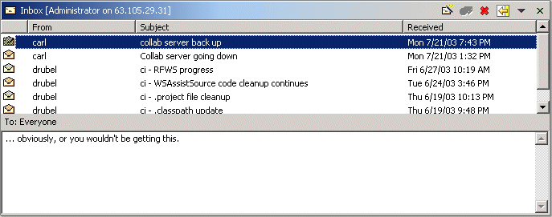
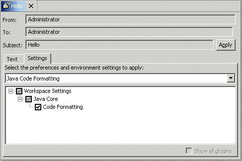

Collaboration Message View
This view shows the messages received from the collaboration server. Messages may have attachments of various types. Most types of attachments represent workbench state, and may be applied in order to change the state of the workbench.

The message list view displays messages from one of a fixed set of folders
- Inbox contains messages received
- Sent contains copies of sent messages
- Drafts contains messages created but not yet sent
- Trash contains messages deleted from other folders
This view also provides a way to create new messages to be sent.
Tool Bar
The tool bar has buttons for the following operations
- Opens a message editor to create a new message to send.
- Apply all attachments to the selected message.
 Delete the selected messages by moving them to the Trash folder; if
the folder being viewed is the Trash folder, the messages are
completely removed.
Delete the selected messages by moving them to the Trash folder; if
the folder being viewed is the Trash folder, the messages are
completely removed. Get any new messages from the collaboration server.
Get any new messages from the collaboration server.
The tool bar menu items specify which folder to view
- Inbox - Show the messages in the Inbox folder.
- Sent - Show the messages in the Sent folder.
- Drafts - Show the messages in the Drafts folder.
- Trash - Show the messages in the Trash folder.
The item with a dot next to it indicates the folder currently on view.
Message List Section
The top half of the message list view shows the messages in the selected folder. The first column in this list is an icon showing whether or not the message has been read, and whether or not it has attachments. The remaining columns show the sender, the subject, and the time it was received.
The context menu contains the following items
- New - Opens a message editor to create a new message to send.
- Open - Open a message editor on the selected message for easier viewing.
- Reply - Reply to the sender of the selected message.
- Reply to All - Reply to all recipients of the selected message.
- Forward - Forward the selected message to someone else.
- Apply - Apply the attachment selected in the message content section (see below).
- Delete - Delete the selected messages.
Double-clicking on a message will also open it in a message editor. If the message has any attachments, they may be applied by clicking the Apply button.

Recipients Section
The narrow area in the middle of the message list view (below the message list ) shows the recipients of the selected message.
Message Content Section
The bottom half of the message list view shows the contents of the message selected in the message list. If the message has attachments, this section shows a tab for each, including one for the text of the message.